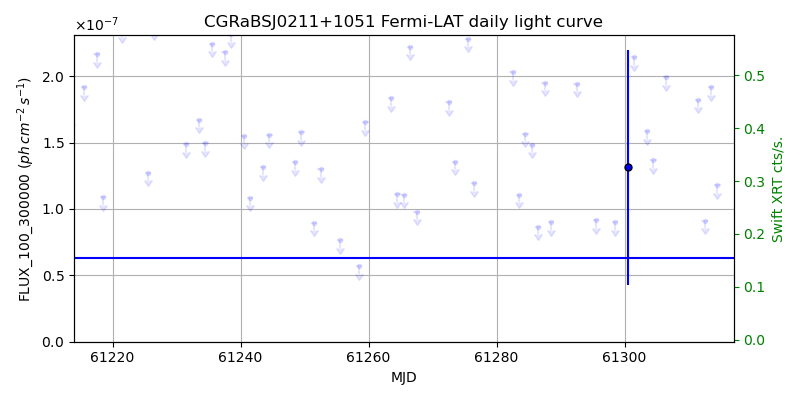
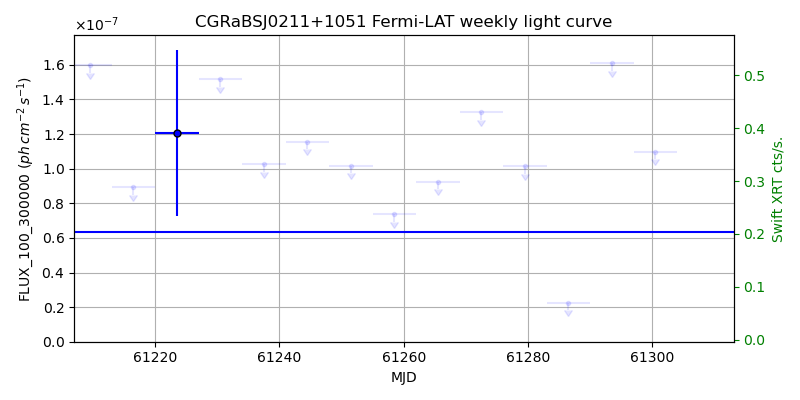
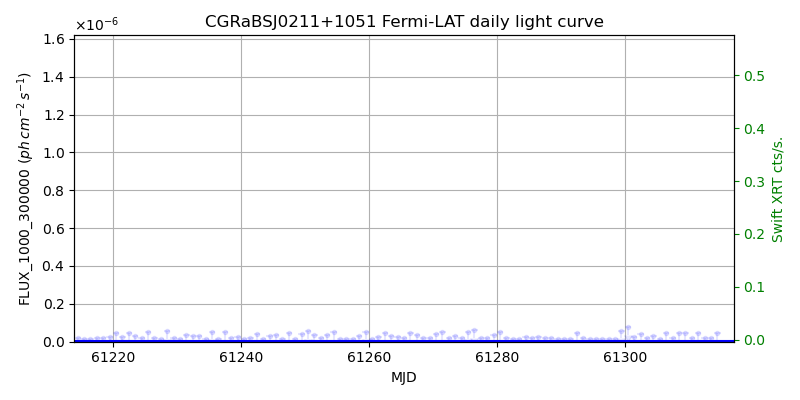
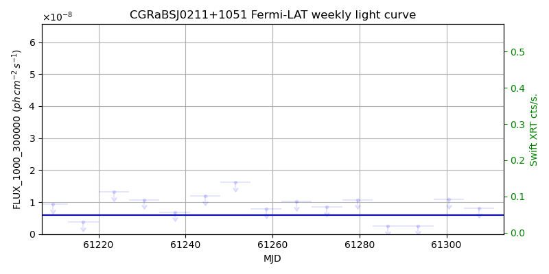

LAT Lightcurve site: https://fermi.gsfc.nasa.gov/ssc/data/access/lat/msl_lc/source/CGRaBS_J0211p1051
Swift site: https://www.swift.psu.edu/monitoring/source.php?source=CGRaBSJ0211+1051
NED: Query
Time of last update of this page: UT: 2026-10-02 15:12 (MJD: 61315.633)
| Property | Value |
|---|---|
| R.A. | 2:11:13.20 |
| Dec. | 10:51:36.0 |
| z | 0.200 |
| 3FGL SpectrumType | LogParabola |
| 3FGL PL Index | |
| 3FGL Flux_100_300000 | 6.33e-08 1 / (s cm2) |
| 3FGL Flux_1000_300000 | 5.93e-09 1 / (s cm2) |
| 3FGL Flux >200 GeV | 4.84e-12 1 / (s cm2) |
| 3FGL Extrap. Crab >200 GeV | 0.02 |
| 3FGL Flux After EBL Absorption >200GeV | 2.53e-12 1 / (s cm2) |
| 3FGL EBL Crab Fraction >200GeV | 0.01 |

| MJD | dMJD | Flux | dFlux | Frac3FGL | FracCrab>200GeV | EBLFracCrab>200GeV |
|---|---|---|---|---|---|---|
| 61310.50 | 0.50 | 4.05e-07 | 0.00e+00 | 0.00 | 0.00 | 0.00 |
| 61311.50 | 0.50 | 1.82e-07 | 0.00e+00 | 0.00 | 0.00 | 0.00 |
| 61312.50 | 0.50 | 9.11e-08 | 0.00e+00 | 0.00 | 0.00 | 0.00 |
| 61313.50 | 0.50 | 1.92e-07 | 0.00e+00 | 0.00 | 0.00 | 0.00 |
| 61314.50 | 0.50 | 1.18e-07 | 0.00e+00 | 0.00 | 0.00 | 0.00 |

| MJD | dMJD | Flux | dFlux | Frac3FGL | FracCrab>200GeV | EBLFracCrab>200GeV |
|---|---|---|---|---|---|---|
| 61279.50 | 3.50 | 1.02e-07 | 0.00e+00 | 0.00 | 0.00 | 0.00 |
| 61286.50 | 3.50 | 2.25e-08 | 0.00e+00 | 0.00 | 0.00 | 0.00 |
| 61293.50 | 3.50 | 1.61e-07 | 0.00e+00 | 0.00 | 0.00 | 0.00 |
| 61300.50 | 3.50 | 1.10e-07 | 0.00e+00 | 0.00 | 0.00 | 0.00 |
| 61307.50 | 3.50 | 2.40e-07 | 0.00e+00 | 0.00 | 0.00 | 0.00 |

| MJD | dMJD | Flux | dFlux | Frac3FGL | FracCrab>200GeV | EBLFracCrab>200GeV |
|---|---|---|---|---|---|---|
| 61310.50 | 0.50 | 1.74e-08 | 0.00e+00 | 0.00 | 0.00 | 0.00 |
| 61311.50 | 0.50 | 4.55e-08 | 0.00e+00 | 0.00 | 0.00 | 0.00 |
| 61312.50 | 0.50 | 1.82e-08 | 0.00e+00 | 0.00 | 0.00 | 0.00 |
| 61313.50 | 0.50 | 1.90e-08 | 0.00e+00 | 0.00 | 0.00 | 0.00 |
| 61314.50 | 0.50 | 4.46e-08 | 0.00e+00 | 0.00 | 0.00 | 0.00 |

| MJD | dMJD | Flux | dFlux | Frac3FGL | FracCrab>200GeV | EBLFracCrab>200GeV |
|---|---|---|---|---|---|---|
| 61279.50 | 3.50 | 1.08e-08 | 0.00e+00 | 0.00 | 0.00 | 0.00 |
| 61286.50 | 3.50 | 2.51e-09 | 0.00e+00 | 0.00 | 0.00 | 0.00 |
| 61293.50 | 3.50 | 2.61e-09 | 0.00e+00 | 0.00 | 0.00 | 0.00 |
| 61300.50 | 3.50 | 1.09e-08 | 0.00e+00 | 0.00 | 0.00 | 0.00 |
| 61307.50 | 3.50 | 8.02e-09 | 0.00e+00 | 0.00 | 0.00 | 0.00 |
--------------------------------------------------------- Using user-supplied coords: 2:11:13.20 10:51:36.0 2000 --------------------------------------------------------- FLWO UT night of: 2026-10-03 Local Sid. @ Midnight: 00:24 Sunset (-15.0) (local, UT): 19:14 02:14 Sunrise (-15.0) (local, UT): 05:12 12:12 Moonrise (local, UT): 22:48 05:48 Moonset (local, UT): Moon phase: 0.53 --------------------------------------------------------- AzTime LSID UT Obj_el Obj_az Mn_el Mn_az Sep. --------------------------------------------------------- 19:14 19:37 02:14 -0.8 76.0 -28.5 20.1 59.6 19:44 20:07 02:44 4.8 79.9 -26.2 26.7 60.0 20:14 20:37 03:14 11.0 83.8 -23.2 32.8 60.4 20:44 21:07 03:44 17.4 87.6 -19.6 38.5 60.8 21:14 21:37 04:14 23.8 91.5 -15.7 43.6 61.1 21:44 22:07 04:44 30.2 95.7 -11.3 48.4 61.5 22:14 22:37 05:14 36.5 100.2 -6.5 52.7 61.9 22:44 23:07 05:44 42.7 105.3 -0.8 56.7 62.2 23:14 23:37 06:14 48.8 111.4 3.8 60.4 62.5 23:44 00:07 06:44 54.6 118.8 9.1 63.9 62.8 00:14 00:38 07:14 59.9 128.2 14.6 67.1 63.1 00:44 01:08 07:44 64.5 140.7 20.3 70.2 63.4 01:14 01:38 08:14 67.8 157.1 26.1 73.1 63.7 01:44 02:08 08:44 69.3 177.0 32.1 76.0 64.0 02:14 02:38 09:14 68.5 197.4 38.1 78.8 64.2 02:44 03:08 09:44 65.6 215.0 44.2 81.7 64.4 03:14 03:38 10:14 61.4 228.5 50.3 84.8 64.7 03:44 04:08 10:44 56.2 238.8 56.5 88.1 64.9 04:14 04:38 11:14 50.5 246.7 62.7 91.9 65.1 04:44 05:08 11:44 44.5 253.0 68.9 96.9 65.3 05:12 05:37 12:12 38.6 258.1 74.7 103.8 65.5 --------------------------------------------------------- Dark hours >55 deg.: 0.00